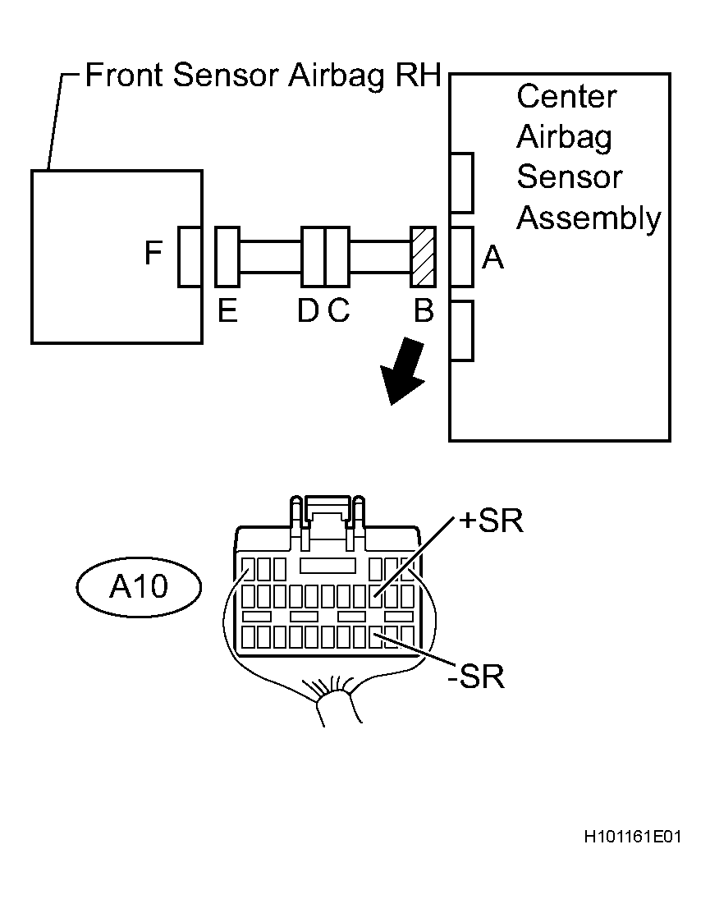
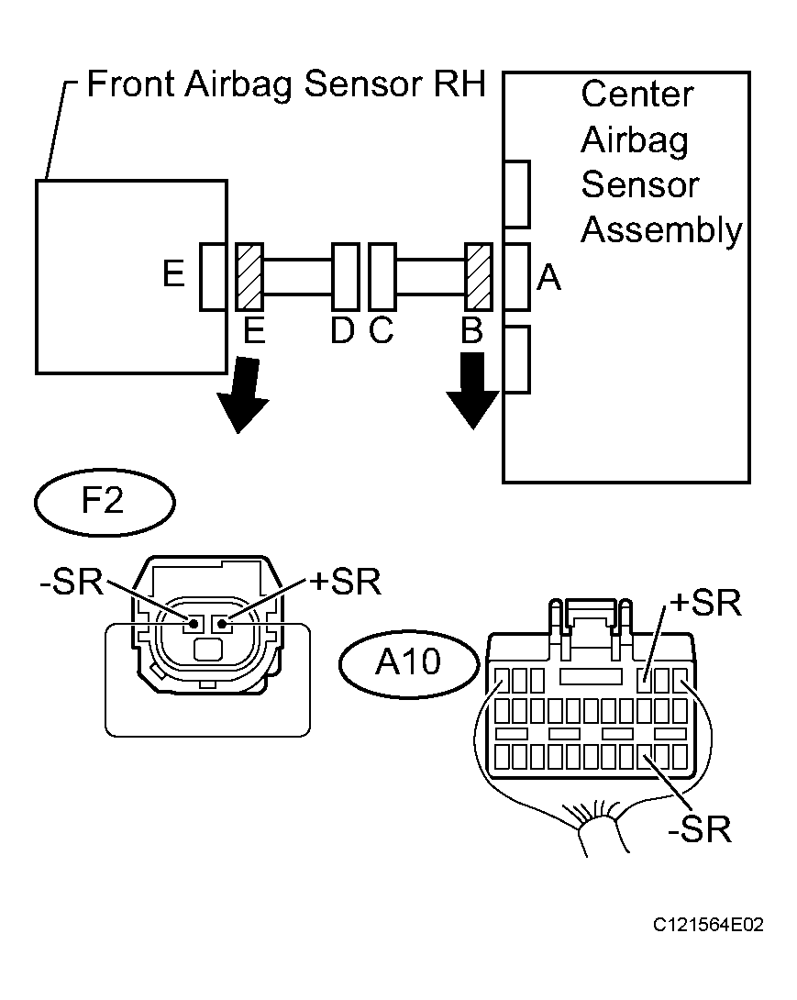
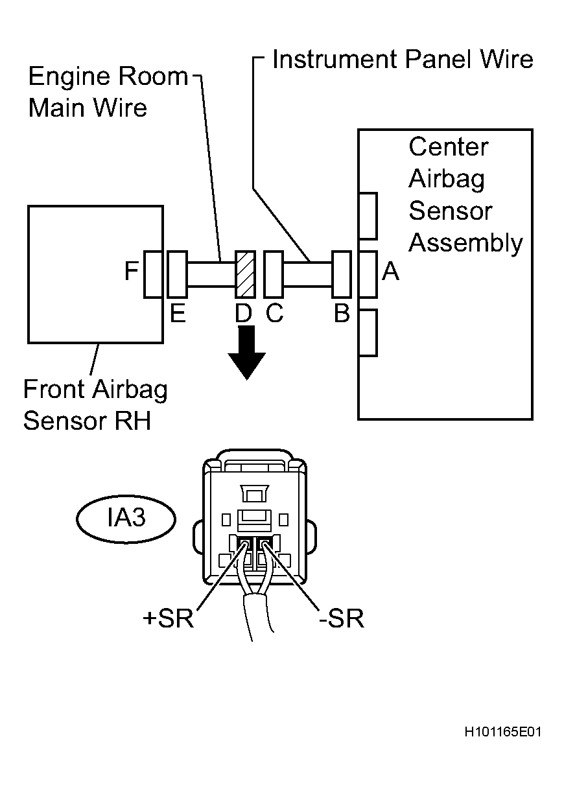
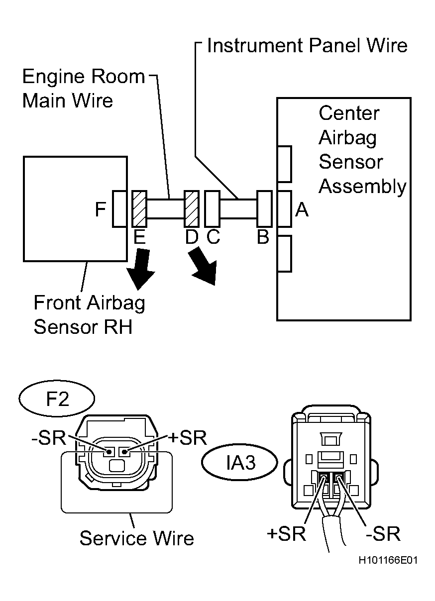

Inspection Procedure
- CHECK FRONT AIRBAG SENSOR RH CIRCUIT (TO B+) (CENTER AIRBAG SENSOR ASSEMBLY - FRONT AIRBAG SENSOR RH)
- Turn the ignition switch to the LOCK position.
- Disconnect the negative (-) terminal cable from the battery, and wait for at least 90 seconds.
- Disconnect the connectors between the center airbag sensor assembly and the front airbag sensor RH.
- Connect the negative (-) terminal cable to the battery, and wait for at least 2 seconds.
- Measure the resistance according to the value(s) in the table below.
Standard voltage
TESTER CONNECTION - SPECIFIED CONDITION (VOLTAGE)Tester Connection (Connector "B") Condition Specified Condition A10-9 (+SR) - Body ground Ignition switch ON Below 1 V A10-20 (-SR) - Body ground
NG : Go to step 7
Fig 1: Checking Front Airbag Sensor RH Circuit (To B+) (Center Airbag Sensor Assembly - Front Airbag Sensor RH)
Courtesy of © TOYOTA, LICENSE AGREEMENT TMS1002OK : Go to Next Step
- CHECK FRONT AIRBAG SENSOR RH CIRCUIT (TO GROUND) (FRONT AIRBAG SENSOR RH - CENTER AIRBAG SENSOR ASSEMBLY)
- Turn the ignition switch to the LOCK position.
- Disconnect the negative (-) terminal cable from the battery, and wait for at least 90 seconds.
- Measure the resistance according to the value(s) in the table below.
Standard resistance
TESTER CONNECTION - SPECIFIED CONDITION (RESISTANCE)Tester Connection (Connector "B") Specified Condition A10-9 (+SR) - Body ground 1 MΩ or higher A10-20 (-SR) - Body ground
NG : Go to step 8
Fig 2: Checking Front Airbag Sensor RH Circuit (To Ground) (Front Airbag Sensor RH - Center Airbag Sensor Assembly)Courtesy of © TOYOTA, LICENSE AGREEMENT TMS1002OK : Go to Next Step
- CHECK FRONT AIRBAG SENSOR RH CIRCUIT (SHORT) (FRONT AIRBAG SENSOR RH - CENTER AIRBAG SENSOR ASSEMBLY)
- Measure the resistance according to the value(s) in the table below.
Standard resistance
TESTER CONNECTION - SPECIFIED CONDITION (RESISTANCE)Tester Connection (Connector "B") Specified Condition A10-9 (+SR) - A10-20 (-SR) 1 MΩ or higher
NG : Go to step 9
Fig 3: Checking Front Airbag Sensor RH Circuit (Short) (Front Airbag Sensor RH - Center Airbag Sensor Assembly)Courtesy of © TOYOTA, LICENSE AGREEMENT TMS1002OK : Go to Next Step
- Measure the resistance according to the value(s) in the table below.
- CHECK FRONT AIRBAG SENSOR RH CIRCUIT (OPEN) (FRONT AIRBAG SENSOR RH - CENTER AIRBAG SENSOR ASSEMBLY)
- Using a service wire, connect terminals +SR and -SR of connector "E".NOTE: Do not forcibly insert a service wire into the terminals of the connector when connecting.
- Measure the resistance according to the value(s) in the table below.
Standard resistance
TESTER CONNECTION - SPECIFIED CONDITION (RESISTANCE)Tester Connection (Connector "B") Specified Condition A10-9 (+SR) - A10-20 (-SR) Below 1 Ω
NG : Go to step 10

Courtesy of © TOYOTA, LICENSE AGREEMENT TMS1002OK : Go to Next Step
- Using a service wire, connect terminals +SR and -SR of connector "E".
- INSPECT FRONT AIRBAG SENSOR RH
- Measure the resistance according to the value(s) in the table below.
Standard resistance
TESTER CONNECTION - SPECIFIED CONDITION (RESISTANCE)Tester Connection (Connector "B") Specified Condition +SR - -SR 738 to 902 Ω
NG : REPLACE FRONT AIRBAG SENSOR RH
OK : Go to Next Step
- Measure the resistance according to the value(s) in the table below.
- CHECK CENTER AIRBAG SENSOR ASSEMBLY
- Connect the connectors to the front airbag sensor RH and the center airbag sensor assembly.
- Connect the negative (-) terminal cable to the battery, and wait for at least 2 seconds.
- Turn the ignition switch to the ON position, and wait for at least 60 seconds.
- Clear the stored DTCs in the memory (see DTC CHECK / CLEAR ).
- Turn the ignition switch to the LOCK position.
- Turn the ignition switch to the ON position, and wait for at least 60 seconds.
- Check for the DTCs (see DTC CHECK / CLEAR
).
OK:
DTC B1156/15 or B1157/15 is not output.
HINT:
Codes other than code B1156/15 or B1157/15 may be output at this time, but they are not related to this check.
NG : REPLACE CENTER AIRBAG SENSOR ASSEMBLY
OK : PROBLEM SYMPTOMS SIMULATION
- CHECK ENGINE ROOM MAIN WIRE HARNESS (TO B+) (CONNECTOR - FRONT AIRBAG SENSOR RH)
- Turn the ignition switch to the LOCK position.
- Disconnect the negative (-) terminal cable from the battery, and wait for at least 90 seconds.
- Disconnect the engine room main wire connector from the instrument panel wire.
- Connect the negative (-) terminal cable to the battery, and wait for at lest 2 seconds.
- Measure the voltage according to the value(s) in the table below.
Standard voltage
TESTER CONNECTION - SPECIFIED CONDITION (VOLTAGE)Tester Connection (Connector "D") Condition Specified Condition IA3-2 (+SR) - Body ground Ignition switch ON Below 1 V IA3-1 (-SR) - Body ground
NG : REPAIR OR REPLACE ENGINE ROOM MAIN WIRE
Courtesy of © TOYOTA, LICENSE AGREEMENT TMS1002OK : REPAIR OR REPLACE INSTRUMENT PANEL WIRE
- CHECK ENGINE ROOM MAIN WIRE HARNESS (TO GROUND) (CONNECTOR - FRONT AIRBAG SENSOR RH)
- Disconnect the engine room main wire connector from the instrument panel wire.
- Measure the resistance according to the value(s) in the table below.
Standard resistance
TESTER CONNECTION - SPECIFIED CONDITION (RESISTANCE)Tester Connection (Connector "D") Specified Condition IA3-2 (+SR) - Body ground 1 MΩ or higher IA3-1 (-SR) - Body ground
NG : REPAIR OR REPLACE ENGINE ROOM MAIN WIRE
Courtesy of © TOYOTA, LICENSE AGREEMENT TMS1002OK : REPAIR OR REPLACE INSTRUMENT PANEL WIRE
- CHECK ENGINE ROOM MAIN WIRE HARNESS (SHORT) (CONNECTOR - FRONT AIRBAG SENSOR RH)
- Disconnect the engine room main wire connector from the instrument panel wire.
- Measure the resistance according to the value(s) in the table below.
Standard resistance
TESTER CONNECTION - SPECIFIED CONDITION (RESISTANCE)Tester Connection (Connector "D") Specified Condition IA3-2 (+SR) - IA3-1 (-SR) 1 MΩ or higher
NG : REPAIR OR REPLACE ENGINE ROOM MAIN WIRE

Courtesy of © TOYOTA, LICENSE AGREEMENT TMS1002OK : REPAIR OR REPLACE INSTRUMENT PANEL WIRE
- CHECK ENGINE ROOM MAIN WIRE HARNESS (OPEN) (CONNECTOR - FRONT AIRBAG SENSOR RH)
- Disconnect the engine room main wire connector from the instrument panel wire.
HINT:
Terminals +SR and -SR of connector "E" have already been connected with each other using the service wire.
- Measure the resistance according to the value(s) in the table below.
Standard resistance
TESTER CONNECTION - SPECIFIED CONDITION (RESISTANCE)Tester Connection (Connector "D") Specified Condition IA3-2 (+SR) - IA3-1 (-SR) Below 1 Ω
NG : REPAIR OR REPLACE ENGINE ROOM MAIN WIRE

Courtesy of © TOYOTA, LICENSE AGREEMENT TMS1002OK : REPAIR OR REPLACE INSTRUMENT PANEL WIRE
- Disconnect the engine room main wire connector from the instrument panel wire.